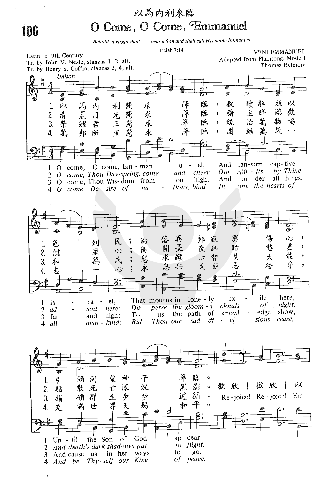

0061 O come, o come, Emmanuel _Latin 9th Century 以馬內利，懇求降臨 ▲ VENI EMMANUEL
| 簡介
O
Come, O Come, Emmanuel |
| These titles of the coming Christ
appeared in daily Vesper antiphons sung during the week before
Christmas; their roots date at least to the reign of Charlemagne. Both
text and tune are the fruit of 19th-century efforts to reclaim Christian
treasures from pre-Reformation sources. |
- 以马内利来临
O Come, O Come, Emmanuel 《岁首到年终》
- 2180：歡欣！歡欣！以色列民！以馬內利，定要降臨！
-
以马内利来临歌 （O come, O come, Emmanuel）
《赞美诗（新编）史话》
- 教会周年节期圣诗——《以马内利来临歌》
- History of Hymns: “O Come, O Come, Emmanuel”
-
Oh, Come, Oh, Come,
Emmanuel
- Commentary on the Revised Lyrics to "O Come, O Come, Emmanuel"
-
The (Hidden) Theology and History of O Come O Come Emmanuel
- 《以马内利来临歌》的历史和神学
-
历史非常悠久的圣诞歌曲：“以马内利恳求降临”
- O Come, O Come, Emmanuel (Wikipedia)
|
|
|
|
1 O come, O come, Immanuel,
and ransom captive Israel
that mourns in lonely exile here
until the Son of God appear.
Refrain:
Rejoice! Rejoice! Immanuel
shall come to you, O Israel.
2 O come, O Wisdom from on high,
who ordered all things mightily;
to us the path of knowledge show
and teach us in its ways to go.
Refrain
3 O come, O come, great Lord of might,
who to your tribes on Sinai's height
in ancient times did give the law
in cloud and majesty and awe.
Refrain
4 O come, O Branch of Jesse's stem,
unto your own and rescue them!
From depths of hell your people save,
and give them victory o'er the grave. Refrain
5 O come, O Key of David, come
and open wide our heavenly home.
Make safe for us the heavenward road
and bar the way to death's abode. Refrain
6 O come, O Bright and Morning Star,
and bring us comfort from afar!
Dispel the shadows of the night
and turn our darkness into light.
Refrain
7 O come, O King of nations, bind
in one the hearts of all mankind.
Bid all our sad divisions cease
and be yourself our King of Peace. Refrain
Psalter Hymnal (Gray)
|
以馬內利，懇求降臨，救贖釋放以色列民；
淪落異邦，寂寞傷心，引頸渴望神子降臨。
歡欣，歡欣，以色列民，以馬內利必定降臨。
耶西之杖，懇求降臨，撒但手中釋放子民；
地獄深處，拯救子民，使眾得勝死亡之墳。
歡欣，歡欣，以色列民，以馬內利必定降臨。
清晨日光，懇求降臨，藉主降臨歡慰眾心；
衝破長夜幽暗陰沈，帶來光明驅散黑雲。
歡欣，歡欣，以色列民，以馬內利必定降臨。
大衛之鑰，懇求降臨，為我眾人大開天門；
鋪平我眾登天路程，關閉人間痛苦路徑。
歡欣，歡欣，以色列民，以馬內利必定降臨。
版權屬 宣道出版社 所有
|
|
https://www.zanmeishige.com/tab/25428.html?songbook=1&index=106

 |
| |
|
https://hymnary.org/text/o_come_o_come_emmanuel_and_ransom
Notes
VENI IMMANUEL was
originally music for a Requiem Mass in a fifteenth-century French
Franciscan Processional. Thomas Helmore (b. Kidderminster,
Worcestershire, England, 1811; d. Westminster, London, England, 1890)
adapted this chant tune and published it in Part II of his The Hymnal
Noted (1854). A graduate of Magdalen College, Oxford,England, Helmore
was ordained a priest in the Church of England, but his main contribution to
the church was in music. He was precentor at St. Mark's College, Chelsea
(1842-1877), and master of the choristers in the Chapel Royal for many
years. He promoted unaccompanied choral services and played an important
part in the revival of plainchant in the Anglican Church. Helmore was
involved in various publications of hymns, chants, and carols, including A
Manual of Plainsong (1850) and The Hymnal Noted (with
John Mason Neale).
VENI IMMANUEL is in the
Dorian mode and could be sung in harmony throughout, but the preferred
practice is to sing the stanzas in unison and the refrain in parts. For
example, sing the hymn antiphonally, perhaps including organ-alone stanzas.
On stanza 4 the organ could play an arrangement of the tune while the
congregation meditates on the text.
Chant tunes are intended
to be sung in speech-rhythm, so sing this hymn freely and do not hesitate to
let the "Rejoice" phrases ring through the church! Use light accompaniment
on the stanzas and full, bright accompaniment on the refrain. Play and sing
the line "Immanuel shall come to you" as one phrase. Organists may want to
use an accompaniment in more of a chant style; for example, Hymnal 1982
(56) contains an accompaniment suited to unison singing of the stanzas.
Accompanists could still use the Psalter Hymnal harmonization
for part singing on the refrain.
--Psalter Hymnal
Handbook
http://www.xueshengshi.com/?p=1372
简介（一） （来源：《岁首到年终》）
Latin hymn, 12th Century
必有童女，怀孕生子，人要称祂的名为以马内利。以马内利翻出来，就是上帝与我们同在。（太 1:23）
主耶稣道成肉身，降世时，其名为「以马内利」，带给我们喜乐，因为有祂同在，无人能从祂手中将我们夺去。主耶稣要升天时，赐下应许说：「我要与你们同在，直到世界的末了。」带给我们安慰和盼望。
我们所信的神乃是「以马内利」的神，祂的同在也是每一个基督徒可经历、可见证的事实。在世上的至亲好友，总有一天要离我们而去。我们常说：「天下没有不散之筵席。」我们接受生离死别的事实；然而天上确有不散的筵席，天上永没有离别的痛苦。我们与亲爱的人在天上永远同在，最要紧的是，神与我们同在。今日我们在世上就可过着天堂的生活，祇要有主与我们同在。正如有首诗歌说：「耶稣同在，就是天堂
」，我们不再孤单，因祂陪我们走生命路。
诗歌之奇妙处乃在于它往往是属灵真理或信息的表达。它也反映人们在不同的文化背景下的经历感受。例如本诗，约产生于 12
世纪的中世纪罗马教会，或许还要更早。它原是一首轮唱之诗，对耶稣的称呼轮流唱出，像：以马内利，耶西之条，清晨日光，大卫之钥等。在十九世纪，许多安立甘的牧师和学者，如翻译本诗的
John Neale 致力于将古代的希腊、拉丁和德文圣诗译成英文。 John Neale 1818 年 1 月 24 日生于英国伦敦，乃译述最多的一位作家。
1 以马内利，恳求降临，救赎释放以色列民；
沦落异邦，寂寞伤心，引颈渴望神子降临。
2 耶西之条，恳求降临，撒但手中，释放子民；
地狱深处，拯救子民，使众得胜死亡之坟。
3 清晨之光，恳求降临，藉主降临，欢慰众心；
冲开长夜幽暗愁云，驱散死亡深沉黑影。
4 大卫之钥，恳求降临，大开我众天上家庭；
安排我众登天路程，断绝人间多愁苦径。
（副歌）
欢欣！欢欣！以色列民，以马内利，定要降临！
＊基督实在是人类存在的意义，昔日和现今，同样亦是宇宙万有的中心。── 潘霍华[/dropdown_box]
简介（二） （摘自：《赞美诗（新编）史话》）
以马内利来临歌 （O come, O come, Emmanuel）
《赞美诗（新编）史话》
经文：“必有童女怀孕，给他起名叫以马内利”（赛7：14）。
《以马内利来临歌》是15世纪的一首拉丁圣诗。原诗是启应对唱（Antiphon）形式，由教堂中两组唱诗班轮流对唱。原诗共八节，从12月17日起每天唱一节，到23日这天则唱两节。
教会很早就规定在圣诞节前的四个星期日，作为教会周年的开始，称之为降临节，一方面为迎接即将来临的圣诞节作准备，另一方面也念念不忘救主二次再来，所以降临节的主题为：“引颈渴望神子降临”（第一节末句）。
起初信徒用简单的长音“哦”字来表示渴望之情，以后觉得如此简音的“哦”字不足以表达渴望的意义，乃逐渐形成若干更有意义的呼吁，轮流启应对唱，如：
哦，恳求以马内利降临，拯救我们！
哦，大卫之钥匙，敬求开启铁牢之锁！
哦，伟大的太阳，赶快赐给我们光明。
后来有人将这些短句组合成为许多首长诗，这首“以马内利来临歌”，便是由这些长诗中选择出来的一首。从历史上以色列民“沦落异邦寂寞伤心”的情景，渴望弥赛亚来临，到新约时代救主已经来临，“为我众安排登天路程”。
诗的原文是拉丁文，1851年由尼尔牧师（J。M。Neal，1818-1866）译成英文。

原曲是15世纪的“平咏调”（见第7首注①）中的第一种调式，调名叫《以马内利来临（VENI
EMMANUEL）》，曲调与一些弥撒曲中的“恳求主，重赐怜悯”的曲调相似。
原曲第一句与第二句连接在一起唱，第三句与第四句又连在一起唱，“欢欣，欢欣”之后的两句又连在一起唱，这就特别把恳切等候救赎主来临的心情表达了出来。配写和声的托马斯。赫尔莫牧师（T。Helmone，1811-1890）
将副歌（合唱）前的曲调，按小调来处理，只在“欢欣，欢欣”的词上，按大调来处理，然后全曲又结尾在小调上，这就更进一步将渴望与救主来临的欢喜交织结合在一起了。
《普天颂赞》（旧版）第78首还有为圣诞节用的本诗的另一种形式，其第一节与本诗相同，其二、三两节歌词如下：
上天圣智，来临，来临，统治万物，协和万民；
恳求显示智慧路程，指导群生步步遵循。
万邦之望，来临，来临，团结万民，一志一心；
永息兵戈，妒忌、纷争，充满世界天赐和平。
这首诗由刘廷芳博士于1934年译成中文
http://echo.hkskh.org/series_article.aspx?lang=2&id=120&nid=5386
根據德籍聖言會神父Bernhard Raas的《教會禮儀年度》，羅馬天主教會在1969年的《羅馬年曆》把將臨期劃分為兩個部分：「第一部分從開始到12月16日，表達了將臨期的末世意味：它使我們期盼基督在時間終結時的來臨。第二部分從12月17日到12月24日，類似一個聖誕節九日敬禮。（按：九日敬禮即「Novena」，可參閱筆者在《教聲》第2151期的介紹）這幾天的禮儀經文，定位是主誕生節日的準備，其中的福音也回溯了發生於基督誕生前的那些事情。」
香港聖公會現時使用的經課表，沒有列出每天聖餐及早晚禱的經課，但我們仍可以參考英格蘭聖公會的經課表，而且可以發現與天主教會的經課表一模一樣，以《馬太福音》及《路加福音》關於救主聖誕前的事蹟，為聖誕節作準備。
在《教聲》第2023期筆者曾為大家介紹將臨期大對經（Great Antiphons）。以下為每篇對經的首句：
12月17日：噢，智慧啊……（O Sapientia）
12月18日：噢，上主啊……（O Adonai）
12月19日：噢，耶西之根啊……（O Radix Jesse）
12月20日：噢，大衞之鑰啊……（O Clavis David）
12月21日：噢，升起的旭日啊……（O Oriens）
12月22日：噢，萬民的君王啊……（O Rex Gentium）
12月23日：噢，以馬內利啊……（O Emmanuel）
这首诗歌的每一句歌词，都是《圣经旧约》用来描述弥赛亚的称谓。
“以马内利，恳求降临！”（因此，主自己要给你们一个兆头，必有童女怀孕生子，给他起名叫以马内利（就是神与我们同在的意思）。——以赛亚书1章14节）
“耶西枝条，恳求降临！”（从耶西的本（原文是丕）必发一条；从他根生的枝子必结果实。——以赛亚书1章1节）
“清晨日光，恳求降临！”（你自生以来，曾命定晨光，使清晨的日光知道本位。——约伯记38章12节）
“大卫之钥，恳求降临！”（我必将大卫家的钥匙放在他肩头上。他开，无人能关；他关，无人能开。——以赛亚书22章22节）
到了十二世紀，這些晚課專用的尊主頌對經，其中五段被選用組成一首拉丁文聖詩，並加上「歡欣！歡欣！以色列民！以馬內利，定要降臨！（Gaude, gaude,
Emmanuel, nascetur pro te, Israel）」這句副歌。
真福約翰．亨利．紐曼（Bl. John Henry Newman）在1836年首次將大對經翻譯成英文版本。到1851年，約翰．尼勒（John Mason
Neale 1818-66）將拉丁文五節版本譯成英文聖詩歌詞；翌年，他修訂了翻譯，成為我們當今通用的版本。在《新英倫詩集》（New English
Hymnal）中，編輯根據利時（T.A. Lacey 1853-1931）的翻譯，使七節版本重現。盼望日後可以有一個中文的七節版本。
曲調稱為〈Veni Immanuel〉，自1854年一直是唱頌此詩的旋律。根據白特理（Ian Bradley）的《聖詩簡介》（The Book of
Hymns），曲調可能是取自法國的彌撒經書，該書現存葡萄牙里斯本的國家圖書館；而記載在彌撒經書的旋律，則是改編自一首素歌的憐憫頌。有學者指尼勒親自將旋律自彌撒經書抄出來；另一說是亨利．真納主教（Bishop
Henry Jenner）在1853年到訪里斯本時抄出來的。今天我們唱頌的版本，則是由聖公會牧師多馬．希爾摩（Thomas Helmore
1811-90）編曲。
http://blog.sina.com.cn/s/blog_4ed4299701015tz5.html
(2012-12-24 13:37:10)
2012年12月23日 作者：皓月康桥
1、《以马内利来临歌》O COME,O COME,EMMANUEL
歌词：——十二世纪古拉丁对唱，尼勒（John M.Neale）英译，刘廷芳汉译1934年
我们今天在圣诞节前夕所广为唱诵的《以马内利来临歌》是源自十二世纪古拉丁对唱圣咏。至今该圣诗已传唱900年。“Emmanuel，Immanuel，Emanuel”为希伯来文片语指“上帝与我们同在”，不同的西文拼法。以马内利来临是个祷告，期望基督到世上来。
第九世纪开始，从十二月十七日至二十三日连续七天的降临期，晚祷（Advent Vespers），要唱七首应答轮唱的赞美诗（Seven Greater
Antiphons），或称Seven Great
O's），十二世纪一位不知名的作者将其中五首改编为有韵律的拉丁诗歌，次序变更，加上副歌。19世纪中叶英国圣公会尼勒牧师（Rev.John M.Neale）在“牛津高派书册运动”中将其由古拉丁语翻译为英语，在他的《Medieval
Hymns and Sequences》，1851，P119发表。1934年由刘廷芳博士汉译收入《普天颂赞》的降临节期的曲目之一。
依照《The Hymnal of the Protestant Episcopal Church in the United States of
America》1940，这七节诗的起句几排列次序如下：
（1）以马内利，恳求降临；（O come,O come,Emmanuel；）
救赎解放以色列民；（And ransom captive Israel；）
沦落异邦，寂寞伤心；（That Mourns in lonely exile here；）
引颈渴望神子降临。（Until the Son of God appear。）
副歌 Refrain
欢欣！欢欣！以色列民！（Rejoice！Rejoice！Emmanuel！）
以马内利定要降临！（Shall come to thee O Israel！）
（2）上天圣智来临，来临，（O come,thou Wisdom on high，）
统治万物，协和万民；（Who ord’rest all things mightily；）
恳求显示智慧路程，（To us the path of knowledge show，）
指导群生步步遵循。（And teach us her ways to go。）
（3）全能之主西乃降临，（O come,O come,thou Lord of might，）
威严震撼以色列营，（Who to thy tribes on Sinai’s height，）
云海火海，闪电鸣雷，（In ancient times didst give the law，）
十诫千秋，万邦敬畏。（In cloud，and majesty，and awe。
（4）耶西之条，恳求降临，（O come,thou Rod of Jesse's stem，）
撒旦手中，解放子民；（From every foe deliver them；）
地域深处，拯救子民，（That trust thy mighty power to save，）
使众得胜死亡之坟。（And give them vict’ry' oer the grace。）
（5）大卫之钥，恳求降临，（O come,thou Key of David,come，）
大开我众天上家庭；（And open wide our heav’nly home；）
安排我众登天路程，（Make safe the way that leads on high，）
断绝人间多愁苦境。（And close the path to misery。）
（6）清晨日光恳求降临，（O come,thou Day—spring from on high，）
藉主降临，欢慰众心；（And cheer us by thy drawing nigh；）
冲开长夜，幽暗愁云，（Disperse the gloomy clouds of night，）
驱散死亡深沉黑影。（And death's dark shadow put to flight。）
（7）万邦之望来临，来临，（O come,Desire of nations,bind，）
团结万民，一志一心；（In one the hearts of all mankind；）
永息兵戈，妒忌纷争，（Bid thou our sad divisions cease，）
充满世界天赐和平。（And be thyself our King of Peace。）
曲调：——Veni Emmanuel Ancient plain song，13th cetury
《Veni Emmanuel》的来历无从考证。其所配合的拉丁歌词首句为“Veni，veni
Emmanuel”而得名。该曲调的风格与13世纪基督教的平咏调圣咏（Plain
chant）极为相似。其特点是一种平稳的单声部曲调，依歌词的强弱齐唱，并且节奏自由，也无伴奏。目前能够查找到的该曲调的体式首见
https://sites.google.com/site/granvillechinese/praise-the-lord/page-2
前三周介绍的歌曲多以现代人对耶稣降临的思考而成，思绪单一、曲调优美是这些近代赞美诗歌（praise
songs）的特点。
本周介绍的是一首历史非常悠久的圣诞歌曲：“以马内利恳求降临”。
这首歌曲在降临节第一周日和本周日（12月12日）唱过，也许有人还记得。
这首歌曲的历史非常悠久，曲调与修道院修士们所唱的赞美诗类似。古典赞美诗（hymns）的特点是比较长、有很多段（比如这首诗歌原来共有八段），而且歌词神学意义丰富。
过去人们没有互联网、电视、电影等娱乐工具，生活不像现代人这样繁忙，所以有时间唱一些歌词较长的赞美诗，并且因此神学根基较现代人更为深厚。当代赞美诗歌虽然抒情、优美、适合反复吟唱，但大多数歌词的神学内容较浅，加上现代人生活节奏很快，有多少人能得到诗篇第一首中所描述的福分呢？
喜爱耶和华的律法，昼夜思想，这人便为有福！
他要象一棵树栽在溪水旁，按时候结果子，叶子也不枯干。
凡他所做的尽都顺利。
-
诗篇1:2,3
言归正传。歌词的第一段描述的是以色列人亡国、被掳到异国他乡之后，想到先知以赛亚的预言：看哪！必有童女怀孕生子；她要给他起名叫
‘以马内利’（赛7:14）。这预言被认为是神应许的弥赛亚（这个“赛亚”不同于那个“赛亚”!
“以赛亚”是一位先知的名字，他所写的“以赛亚书”在旧约圣经中地位非常重要；而“弥赛亚”是希伯来文，意思是“受膏者”，翻译成希腊文为“基督”），他将要来拯救以色列民。所以
（1）以马内利，恳求降临；（O come,O come,Emmanuel；）
第一段表达了以色列人盼望那弥赛亚赶快降临、救赎解放他们。
（3）全能之主西乃降临，（O come,O come,thou Lord of might，）
第二段歌词是回忆以色列人在出埃及后、西乃山上，神在云中向摩西显现并赐给以色列人律法。
（4）耶西之条，恳求降临，（O come,thou Rod of Jesse's stem，）
从第三段起，歌词的内容从前两段中的以色列人转到基督徒。其中 “耶西之杖”需要解释一下：耶西是以色列王大卫的父亲，而神应许大卫说他的一个后裔将永坐王位（撒下7:12-16），指的就是日后要来的弥赛亚耶稣 -
正因如此，耶稣在福音书里被称为“大卫的子孙”。在以赛亚书11章第1节（从耶西的树干必生出一根嫩芽，从他的根而出的枝条必结果子）和第10-12节（到那日，耶西的根必竖立起来，作万族的旗帜；列国的人必寻求他，他安息之所必大有荣耀。到那日，主必再用自己的手，赎回他子民中的余民...他必向列国竖起旗帜，召聚以色列被掳去的人，又从地的四方聚集分散了的犹大人）都提到耶西的树干、耶西的根，暗指耶西的儿子大卫的后代耶稣。“杖”在旧约中象征着权柄。所以“耶西之杖”的意思是“有权柄的耶稣”：耶稣是王，他战胜了死亡，所有在他里面的人都一同得胜。
（6）清晨日光恳求降临，（O come,thou Day—spring from on high，）
第四段歌词也与以赛亚书有关：“行在黑暗中的人民，看见了大光；住在死荫之地的人，有光照耀他们。”（赛9:2）这光就是指那将要来到世上的弥赛亚-耶稣，“因为有一个婴孩为我们而生，有一个儿子赐给我们；政权必担在他的肩头上；他的名必称为“奇妙的策士、全能的神、永�琲漱驉B和平的君”。他的政权与平安必无穷无尽地增加，他在大卫的宝座上治理他的国，以公平和公义使国坚立稳固，从现在直到永远。万军之耶和华的热心必成全这事 ”（赛9:6,7）。耶稣说：“我是世界的光，跟从我的，必定不在黑暗里走，却要得着生命的光”（约8:12），实际上是在表明自己是弥赛亚也是神的双重的身份。
（5）大卫之钥，恳求降临，（O come,thou Key of David,come，）
第五段歌词中“大卫之钥”也出现于以赛亚书22章22节“我必把大卫家的钥匙放在他肩头上；他开了，就没有人能关；他关了，就没有人能开。”钥匙代表权柄。那有权柄的是谁呢？是那被称为“大卫的子孙”的耶稣，因为在启示录3:7节“那圣洁的、真实的，拿着大卫的钥匙，开了就没有人能关，关了就没有人能开的”正是那复活后升天的主，他拿着神国的钥匙。所以，这段歌词表达的是基督徒们盼望主能尽快再来、打开大门让属于他的人能进入天上的家庭。
（7）万邦之望来临，来临，（O come,Desire of nations,bind，）
最后一段歌词指出：那将要来临的是万邦所望的。
第三段歌词中引用的以赛亚书11章10-12节的经文提到“万族的旗帜；列国的人必寻求他，”
在49:6节中更指出：“你作我的仆人，使雅各众支派复兴，使以色列中得保全的归回，只是小事，我还要使你作列国的光，使我的救恩传到地极。”
路家福音第2章记载着这样两个故事：耶稣出生后，天使向牧羊人报信说：“我报给你们大喜的信息，是关于万民的：今天在大卫的城里，为你们生了救主，就是主基督；”
(2:10,11)
后来，当耶稣被父母送到圣殿、行奉献礼，西面被圣灵感动，抱着耶稣说：“我的眼睛已经看见你的救恩，
就是你在万民面前所预备的，为要作外族人启示的光，和你民以色列的荣耀”（2:30-32）。
愿我们学唱这首著名的圣诞歌曲时能思想神救恩的宝贵，并能对旧约以色列人的历史以及有关弥赛亚-耶稣的预言有更多的了解。只有这样，我们才能更深地体会神的智慧和拯救外邦人-就是像你、我这样的非以色列人-的全盘计划。
也愿我们一边唱着这首诗歌，一边等待着庆祝圣诞节，并盼望着主耶稣的第二次降临，就像启示录最后一章22:20所写：“主耶稣啊，请你来吧！”
不过，且慢：如果主今天真的来临，我们准备好了吗？
http://jloverseas.org/oxford/
2018年降临期随想
徐旭初 于牛津
受教育于剑桥三一学院的圣公会高派牧师兼圣诗作家约翰-梅森-尼尔（John Mason Neale
1818-1866）在牛津书册运动期间，建立圣公会修女办的护理院，帮助建立社会福利机构，如孤儿院等，并担任萨克维尔救济院的院长。此外，他利用业余时间，将中世纪希腊文和拉丁文圣诗译成英文。这些古代圣诗多跟教会年历中的瞻礼有关。关于尼尔，我们只知他是让我们知道这首大家所爱的《以马内利来临歌》的译者。
《以马内利来临歌》也许是最古的圣诞歌之一。它本为8-9世纪本笃会修士所唱的格里高利圣咏（其特点是一种平平的单声部曲调，节奏自由，且无伴奏）。它在12世纪演变成有韵律的圣诗。那时西欧的修道院在将临期最后一周必吟唱这日课经中作为黄昏赞的圣诗。这些诗被统称为「大O启应轮唱」（Great
O Antiphons）。原诗共七节，自12月17日至12月23日，每天唱一节，用心灵和歌声预备基督降生。
最先在1710年德国科隆出版了原耶稣会收集并汇编的《公教圣咏》，其中有这首仅存五节（原有七节的中世纪手稿未幸存）另加副歌的圣诗。至1844年，德国又出《拉丁文赞美诗集》，其收录了原绝版了的《公教圣咏》中的拉丁圣诗，包括本诗。尼尔牧师正是从该《拉丁文赞美诗集》中发现此诗，然后把它译成英文。1851年，何而模牧师（Thomas
Helmore
1811—1890）把词配上15世纪法国方济各会修女用于出殡游行之圣歌的古调，其原修道院的平咏调带有葬礼般的悲哀和渴望。这调跟《普世欢腾》调的欢乐风格完全不一样，所以配得很好，把那种焦虑、渴望、盼望等心情都淋漓尽致地表现了出来。尼尔的该诗英译文（修正版）于1861年进入圣公会官方的《古今赞美诗》中，然后从那儿传入整个新教世界。1934年，刘廷芳博士将其从英文译成中文，收入《普天颂赞》将临期歌目之一。
1878年，本圣诗出现在德国耶稣会莫尔神父出版的《圣咏》中，但它由原来的五节被增补为七节；新增补的两节为「圣智」和「万邦之望」两节。其英文由H S
柯芬于1916年增译。其七节圣咏每一节以弥赛亚的名号作开始，这些名号都记载在先知以赛亚所预言弥撒亚必要来临的圣经经文中。
12月17日轮唱：哦，圣智！ （O Sapentia）
12月18日轮唱：哦，上主！ （O Adonai）
12月19日轮唱：哦，耶西之条！
（O Radix Jesse）
12月20日轮唱：哦，大卫之钥！
（O Clavis David）
12月21日轮唱：哦，清晨日光！
（O Oriens）
12月22日轮唱：哦，万邦之望！
（O Rex gentium）
12月23日轮唱：哦，以马内利！
（O Emmanuel）
这七个名号都是指着耶稣说的；每一个名号都充满希望。从次序上讲，今天的诗歌却以第七节的「以马内利」开始。本诗可被称为圣经弥赛亚观的浓缩本：他是谁？他代表什么？他为何降世？中世纪的一般信徒不识字，也无圣经，故本诗歌起到了帮助信众学习新旧约如何一起讲有关耶稣的事。从地位上讲，本圣诗被认为是教会圣诗中最重要的圣诗之一。
以下我先从1936年广学会出版的《普天颂赞》来看《以马内利来临歌》中所含的福音信息。该诗中译文分上下两体，中译文上体共四节：「以马内利」，「耶西之条」，「清晨日光」和「大卫之钥」。1983年中国基督教两会出的《赞美诗（新编）》中的《以马内利来临歌》删除了《普天颂赞》中该歌的第二节，只收集第一，第三和第四节。译文下体共三节：「以马内利」，「圣智」和「万邦之望」。
《普天颂赞》第七十八首（上）以马内利来临
（一）（注：原七节诗之第七节）
以马内利恳求降临，O come, O
come, Emmanuel, (Veni, veni Emmanuel!)
救赎解放以色列民；And ransom
captive Israel, (Captivum solve Israel!)
沦落异邦寂寞伤心，That
mourns in lonely exile here, (Qui gemit in exilio,)
引颈渴望神子降临。Until the
Son of God appear. (Privatus Dei Filio,)
本节表达上帝子民对被救赎被解放的热切渴望。其经文来自赛七14：「因此，主自己要给你们一个兆头，必有童女怀孕生子，给他起名叫以马内利。（就是上帝与我们同在的意思）。」「以马内利」意味着只有道成肉身的神，即既神又人的耶稣才能救赎我们，解放我们。
赛七14的经文背景：当北方的亚兰王利汛和以色利王比加欲来攻打耶路撒冷时，犹大王亚哈斯和耶路撒冷的百姓就惊慌失措，不知如何是好。于是上帝就差先知以赛亚去见亚哈斯，对他说：不要因亚兰王和以色利王所发的烈怒而害怕。因上帝必应许与他们同在，其兆头就是：童女怀孕生子。（参赛七1-14）
（二）（原七节诗之第三节）
耶西之条恳求降临，O come,
Thou Rod of Jesse, free (Veni o Jesse virgula!)
撒但手中解放子民；Thine own
from Satan's tyranny; (Ex hostis tuos ungula,)
地狱深处拯救子民，From
depths of hell Thy people save, (De specu tuos tartari)
使众得胜死亡之坟。And give
them victory o'er the grave. (Educ, et antro barathri.)
基督来临为我们提供了希望的微光。其经文来自赛十一1：「从耶西的本（原文作墩）必发一条，从他生的枝子必结果实。」以赛亚预言说：当以色列这个小国几被北方的超级大国消灭，以及它的治理者和救赎者来临的希望几被遗忘时，以色列这棵被砍树留下的死墩下，也就是在地下，必有绿色的生命之根长出。它开始似乎微不足道，无人注意；但随着时间的推移，它会慢慢发展壮大，成为一股不可忽视的力量。它所象征的基督必以其死而复活，拯救他的民永远脱离撒旦死亡的辖制。「到那日，耶西的根立作万民的大旗。外邦人必寻求他。」（赛十一10）「又有以赛亚说，将来有耶西的根，就是那兴起来要治理外邦的。外邦人要仰望他。」（罗十五12）
「耶西的根」是希望的鼓励：上帝定会成全他所应许的。当一切看起来是毫无希望时，我们不要放弃希望，因那发出应许的神是信实的神。尽管撒但企图阻挠上帝的计划，上帝仍信守他的应许。
（三）（原七节诗之第五节）
清晨日光恳求降临，O come,
Thou Dayspring, from on high, (Veni, veni o oriens!)
藉主降临欢慰众心；And cheer
us by Thy drawing nigh; (Solare nos adveniens,)
冲开长夜幽暗愁云，Disperse
the gloomy clouds of night, (Noctis depelle nebulas,)
驱散死亡深沉黑影。And
death's dark shadows put to flight. (Dirasque mortis tenebras.)
本节讲神国的黎明。基督将是世界的光，驱除无望的黑暗。其经文来自赛九2：「在黑暗中行走的百姓，看见了大光。住在死荫之地的人，有光照耀他们。」又赛六十1-2：「兴起发光，因为你的光已经来到，耶和华的荣耀发现照耀你。看哪，黑暗遮盖大地，幽暗遮盖万民。耶和华却要显现照耀你，他的荣耀要现在你身上。」
耶稣的到来照亮了走向上帝的路。「耶稣又对众人说，我是世界的光。跟从我的，就不在黑暗里走，必要得着生命的光。」（约八12）「必有许多国的民前往，说，来吧，我们登耶和华的山，奔雅各上帝的殿。主必将他的道教训我们，我们也要行他的路。因为训诲必出于锡安，耶和华的言语必出于耶路撒冷。」（弥四2）
《撒迦利亚颂》最后两节：「因我们上帝怜悯的心肠，叫清晨的日光从高天临到我们，要照亮坐在黑暗中死荫里的人，把我们的脚引到平安的路上。」（路一78-79）
（四）
大卫之钥恳求降临，O come,
Thou Key of David, come (Veni clavis Davidica!)
大开我众天上家庭；And open
wide our heav'nly home; (Regna reclude coelica,)
安排我众登天路程，Make safe
the way that leads on high, (Fac iter Tutum superum,)
断绝人间多愁苦径。And close
the path to misery. (Et claude vias Inferum.)
耶稣要救我们脱离地狱，关闭我们身后地狱的门，打开前面天堂的门。其经文来自赛二十二22：「我必将大卫家的钥匙放在他肩头上。他开，无人能关。他关，无人能开。」
耶稣要「开瞎子的眼，领被囚的出牢狱，领坐黑暗的出监牢。」（赛四十二7）
（五）原七节诗之第二节，也为原五节诗之最后一节，未被《普天颂赞》收录
全能之主西乃降临，O come,
Adonai, Lord of might, (Veni, veni Adonai!)
威严震撼以色列营；Who to Thy
tribes, on Sinai's height, (Qui populo in Sinai)
云海火海闪电鸣雷，In ancient
times didst give the law (Legem dedisti vertice,)
十诫千秋万邦敬畏。In cloud
and majesty and awe. (In maiestate gloriae.)
弥赛亚是慈爱的，但也是公义的。关于其公义的属性，见上帝藉先知以赛亚所预言的：他「却要以公义审判贫穷人，以正直判断世上的谦卑人。以口中的杖击打世界。以嘴里的气杀戮恶人。公义必当他的腰带，信实必当他胁下的带子。」（赛十一4-5）「因为耶和华是审判我们的，耶和华是给我们设律法的，耶和华是我们的王。他必拯救我们。」（赛三十三22）
圣经说到这预言的实现时说：「论到子却说，上帝阿，你的宝座是永永远远的，你的国权是正直的。你喜爱公义，恨恶罪恶。所以上帝就是你的上帝，用喜乐油膏你，胜过膏你的同伴。」（来一8-9）
这就是以上七节让我们看到的耶稣：他要成就一切上帝所应许的。
副歌
欢欣！欢欣！Rejoice!
Rejoice! Emmanuel (Gaude, gaude, Emmanuel)
以色列民，以马内利定要降临！Shall
come to thee, O Israel. (nascetur pro te, Israel.)
副歌是要振作起我们疲惫的心，用信心看到尚未实现的未来。
《普天颂赞》第七十八首又一体（下）
（一）
以马内利来临来临，恳求解放以色列民；
沦落异邦寂寞伤心，引颈渴望神子降临。
（重复第一体之第一节）
（二）（原七节诗之第一节）
上天圣智来临来临，O come,
Thou Wisdom from on high, (Veni, O Sapientia,)
统治万物协和万民；And order
all things, far and nigh; (Quae hic disponis omnia,)
恳求显示智慧路程，To us the
path of knowledge show, (Veni, viam prudentiae)
指导群生步步遵循。And cause
us in her ways to go. (Ut doceas et gloriae.)
这是呼吁智慧为我们生活的混乱带来秩序，给予我们神圣的知识，并引导我们沿着这条智慧的路走下去，而不是那条愚昧的路。耶稣是智慧的经文来自赛九6：「他名称为 ...
策士。」又赛十一2：「耶和华的灵必住在他身上，就是使他有智慧和聪明的灵。」又赛二十八29：「他的谋略奇妙，他的智慧广大。」
保罗称基督为「上帝的智慧。」（林前一23-24）所罗门王干脆直称基督是「智慧」：「智慧岂不呼叫，聪明岂不发声。... 他 ... 大声说 ...
在耶和华造化的起头，在太初创造万物之先，就有了我。从亘古，从太初，未有世界以前，我已被立。」（箴八1-3, 22-23）
（三）（原七节诗之第六节）
万邦之望来临来临，O come,
Desire of nations, bind (Veni, Veni, Rex Gentium,)
团结万民一志一心；All
peoples in one heart and mind; (Veni, Redemptor omnium,)
永息兵戈妒忌纷争，Bid envy,
strife and quarrels cease; (Ut salves tuos famulos)
充满世界天赐和平。Fill the
whole world with heaven’s peace. (Peccati sibi conscios.)
本节讲耶稣要从各族各民救赎人来，使他们成为和平的国度。
「万邦之望」引自该二7：「万国所羡慕的必来到。」
本节对未来弥赛亚国度实现之祈求乃根据先知以赛亚的预言：「他名称为 ...
和平的君。」（赛九6）「他必在列国中施行审判，为许多国民断定是非。他们要将刀打成犁头，把枪打成镰刀。这国不举刀攻击那国，他们也不再学习战事。」（赛二4）「豺狼必与绵羊羔同居，豹子与山羊羔同卧。少壮狮子，与牛犊，并肥畜同群。小孩子要牵引他们。牛必与熊同食。牛犊必与小熊同卧。狮子必吃草与牛一样。吃奶的孩子必玩耍在虺蛇的洞口，断奶的婴儿必按手在毒蛇的穴上。在我圣山的遍处，这一切都不伤人，不害物。因为认识耶和华的知识要充满遍地，好像水充满洋海一般。」（赛十一6-9）
以赛亚渴望世界和平。他知道在何时何地实现：和平只有在弥赛亚再来时，在基督统治的国度里实现。若通过有罪人的机制，和平则永远达不到。
副歌
欢欣！欢欣！以色列民，以马内利万众欢迎！
这副歌鼓起了我们信心中的勇气，让我们看到救赎最后完成之确定。
耶稣来，是要我们经验以上七节所应许的福气。我们要思想其中所有的应许。当然，盼望所应许的是痛苦的，但等到所盼望来到了，等候的痛苦也就过去了。耶稣说：「我实实在在地告诉你们，你们将要痛哭，哀号，世人倒要喜乐。你们将要忧愁，然而你们的忧愁，要变为喜乐。...
我要再见你们，你们的心就喜乐了。这喜乐，也没有人能夺去。」（约十六20, 22）
最后我们来看《以马内利来临歌》所隐藏的神学意义。
我们若把耶稣名号的首字母
Sapentia（圣智），Adonai（上主），Radix Jesse（耶西之条），Clavis David（大卫之钥），Oriens（清晨日光），Rex
gentium（万邦之望），Emmanuel（以马内利）之组合词 SARCORE 倒过来读，就成了ERO CRAS，拉丁文就是：我明天将再来（I shall
be tomorrow）。这似乎暗示说：历史的终结，就是基督再来之喜乐。
是的，耶稣在历史上曾来过，但他还要再来。耶稣既对我们说 eram（I was 我曾经 [ 来过] ），又对我们说 ero（I shall be 我还要 [再来]
）。基督再来，乃基督徒之洪福之望！这是何等喜乐的缘由！本圣诗似乎以其隐藏的神学意义，提醒我们说：作为基督徒，我们盼望的是另一个国度；在这国度里，那将要来的弥赛亚要擦去我们一切愁苦的眼泪。
每当我们在将临期唱此圣诗时，我们总会把自己看成是处于撒迦利亚，以利沙伯，西缅，以及所有基督前的所有圣徒的境况中，却忘了本圣诗有神学上的双重意义。其实，耶稣来，要救赎我们（以色列民和万民），这不光指他第一次来，也指他第二次再来。因此，这七节也同样适用于盼望基督再来。我们今天在将临期，也是在预备我们的心灵，等候主的再来。
约翰-派博牧师说：「以马内利来临，晨光出现，这只是救赎的开始。然后便是流宝血，付罪债，平息上帝对罪人的震怒，确定罪人被接纳。现在付款已在银行里，丰收的初熟果已在库藏里。未来是确定的，喜乐是大的。但是那未来还未到：死亡仍要临到我们，疾病仍要缠绕我们，灾难仍会发生，撒旦仍在四处游行，肉体仍跟圣灵争战，罪仍在我们里面。
『我们这有圣灵初结果子的』，还是『心里叹息，等候得着儿子的名分，乃是我们的身体得赎。』（罗八23）『等候我们的主耶稣基督显现。』（林前一7）『等候所盼望的义。』（加五5）」我们还在引颈盼望
...
派博牧师又说：「基督徒的生活在这两极之间摇摆：『已经』被赎的满溢的喜乐（弗一7：我们藉这爱子的血，得蒙救赎，过犯得以赦免，乃是照他丰富的恩典。）和『尚未』赎回的泪流满面的渴望（弗四30：你们原是受了他的印记，等候得赎的日子来到。）...
我们『似乎忧愁，却是常常快乐的。』（林后六10）... 当圣诞来临时，大多数基督徒都会感受到悲伤和兴奋。我们绝不能让悲伤破坏孩子般的简单快乐。...
让我们在耶稣身上看到尽可能多的亮度。但是，我们不要认为将临期必须都是欢乐和铃儿响叮当（jingle bells）。...
已经，但还没有。荣耀应许之成全，有！但在新天新地得到新的、无罪的身体，那还没有！我们仍充满信心，呼求说：以马内利，来临，来临！」
本圣诗可以说是抓住了基督徒生命的两个方面：喜乐中有悲伤；悲伤中有喜乐。我们仍经历「寂寞伤心，」「死亡之坟，」「长夜幽暗愁云，」「死亡深沉黑影，」「人间多愁苦径，」「兵戈妒忌纷争，」因此仍「引颈渴望神子降临。」但是我们却「欢欣！欢欣！」因「以马内利定要降临！」
本诗告诉我们耶稣是：智慧之源；完全的神；恶的征服者；神国的治理者；救恩之光；和平之君；可靠的希望。在这圣诞季节中，惟耶稣能满足我们灵魂的需要，惟耶稣是这个世界的希望。
「主耶稣啊，我愿你来！」（启二十二20）Veni, Domine Iesu!
棕枝主日思想
-
一生献给主基督
-
佳音歌 （吴安娜 词曲）
-
哈利路亚 （莫扎特）
-
耐心等候 （孟德尔松）
-
数算主恩歌
（俄特曼词,埃克塞尔曲）
-
主啊，我愿跟从你 （吴安娜 词曲）
http://jloverseas.org/anthem/
http://jloverseas.org/seminars/

http://www.congsing.org/oh_come_oh_come.html
John Mason Neale, 1851
Addressed to Christ and then the Church
|
Oh, come, oh, come, Emmanuel, |
Is. 7:14; Matt. 1:23 |
|
and ransom captive Israel, |
2 Kin. 24:16; Is. 35:10; Mark 10:45; Gal. 3:23 |
|
that mourns in lonely exile here, |
Lam. 1:3; Heb. 9:28 |
|
until the Son of God appear. |
Is. 61:2 |
|
Rejoice! Rejoice! Emmanuel |
Zech. 2:10; Rev. 22:20 |
|
shall come to thee, O Israel. |
|
|
|
|
|
Oh, come, oh, come, thou Lord of might, |
Ps. 28:8; 89:8; Jer. 10:6 |
|
who to thy tribes, on Sinai’s height, |
|
|
in ancient times didst give the law |
Ex. 24:12 |
|
in cloud and majesty and awe. |
Ex. 19:18 |
|
Rejoice! Rejoice! Emmanuel |
|
|
shall come to thee, O Israel. |
|
|
|
|
|
Oh, come, thou Rod of Jesse, free |
Is. 11:1, 10; Rom. 15:12 |
|
thine own from Satan’s tyranny; |
Is. 49:25; Gal. 4:3; Rev. 2:13 |
|
from depths of hell thy people save, |
Ezek. 37:23; Matt. 1:21 |
|
and give them vict’ry o’er the grave. |
1 Cor. 15:21 |
|
Rejoice! Rejoice! Emmanuel |
|
|
shall come to thee, O Israel. |
|
|
|
|
|
Oh, come, thou Dayspring from on high, |
Mal. 4:2; Luke 1:78 (KJV); 2 Peter 1:19 |
|
and cheer us by thy drawing nigh; |
|
|
disperse the gloomy clouds of night, |
Is. 9:2; Is. 60:1–2 |
|
and death’s dark shadows put to flight. |
Matt. 4:16; Luke 1:79 |
|
Rejoice! Rejoice! Emmanuel |
|
|
shall come to thee, O Israel. |
|
|
|
|
|
Oh, come, thou Key of David, come |
Is. 22:22; Rev. 3:7 |
|
and open wide our heav’nly home; |
Mal. 3:10 |
|
make safe the way that leads on high, |
John 14:6 |
|
and close the path to misery. |
Matt. 7:13; Rom. 3:16 |
|
Rejoice! Rejoice! Emmanuel |
|
|
shall come to thee, O Israel. |
|
Not least among the joys of the second coming of Christ will be the
unification of the Church Historic. Imagine rejoicing at the wedding feast of
the Lamb with saints from Boethius's sixth century and Calvin's
sixteenth. When we set aside the larger part of December as a period in
preparation for the arrival (advent)
of Christ, we do so partly to long for Christ's second coming and the way it
will bring together all saints from all ages. The advent hymn printed above
can boast one of the richest histories in English hymnody, and one that
touches many points along the line that runs from the early church till today.
To sing it at Advent is not only to mean the words it gives us—words that call
for the second coming of Christ and prepare us for Christmas in the most
biblical of terms. It is to share in that same petition voiced by millions of
saints gone before us, a union with whom we cannot perfectly taste until the
second coming.
This hymn is popularly described as a rendering of twelfth-century chant
texts, but this is to miss the biblical and thus older origins of the imagery
in each stanza (see references above). No later than the eighth century AD,
monks developed a set of chants, to be used during the last part of Advent,
all of which begin with the vocative particle “O” and end with a petition for
Christ to come. The seven original chants petitioned him according to the
following names: Wisdom, Lord, Root of Jesse, Key of David, Daystar, King, and
Emmanuel. In each, Christ is asked for something befitting each name (as
Daystar, to enlighten those in the darkness of sin, for example). The set of
chants, known throughout the Middle Ages as the “O” antiphons, were a way to
let Old Testament imagery prepare a way for the feast of Christmas.
As beautiful as these medieval chants are, their idiom (through-composed and
melismatic) was developed in the hands of trained monastic singers; it
was never meant for a congregation of limited musical ability. By contrast, as
early as Ambrose of Milan, congregations of laity were using metrical poetry
in strophic settings (with the same tune reused for each stanza). The “O”
antiphons were eventually rendered as a strophic hymn, perhaps as early as the
twelfth century. In the nineteenth-century revival of medieval spirituality,
John Mason Neale turned to this hymn, the chant text that preceded it, and
ultimately the prophet Isaiah, to make a hymn universally known and loved
among English-speaking Christians. It has been modified over the years and
appears in at least three hundred hymnals.
The five (out of seven original) stanzas chosen by the editors of the Trinity
Hymnal are reordered to take singers from a petition to God With Us, made
in mourning exile, to a petition to the New David who opens heaven’s gate. The
first stanza appeals to Christ with the name of the New Testament as promised
by Isaiah—Emmanuel. But the appeal is for the sake of Israel—God’s Old
Testament people. In the last stanza, thus printed, this is reversed, so that
David, the Old Testament king, is used to describe Christ who brings us into
heaven, our final resting place. These two stanzas alert us to the
strange suspension of “already” and “not yet” common in Advent. The refrain
compounds this suspension. There, the singer addresses not Christ but the
Church. He commands his fellow believers to rejoice because Emmanuel has come,
even though the verses petition Christ to come again. For it is equally true
to say that Christ has come and that Christ will come.
The poetry here is mostly the work of the scriptural images used.
Nevertheless, Neale and those who have amended his work deserve honorable
mention. Tactical use of enjambment in
the
third stanza (Oh, come, thou Rod of Jesse, free / thine own),
fifth stanza (Oh, come, thou Key of David, come / and open), and
refrain (Rejoice! Rejoice! Emmanuel / shall come) creates a momentum offset by
the segmented logic of the rest of the poem.
Also of merit is the way each stanza sustains the image laid out by its
own particular name of Christ. So, for instance, Jesse’s Rod is taken to be a
scepter that breaks the tyranny of Satan and liberates believers from death
and hell.
By a strange coincidence, Thomas Helmore's tune VENI
EMMANUEL bears some resemblance in places to the eighth-century chant
melodies that once set the texts mentioned above. It is certainly influenced
by a fifteenth-century processional written for French nuns. But to chase out
all the distant references would be needlessly complicated for our purposes.
Those purposes are simple—to demonstrate that the tune is memorable,
distinctive, singable, and does the text's meaning a service. As for the first
three, there is hardly an English speaking Christian who does not know the
tune. If they cannot sing it, they probably sing nothing at all. As for the
fourth, we’ll point out three ways the tune supports the text’s meaning.
First, the archaic chant-like style keeps singers mindful of the historical
scope of Israel’s—that is, the Church’s—waiting for Emmanuel. Second, the
change of rhythm at the beginning of the refrain interrupts the flow of the
chant to exclaim, “Rejoice! Rejoice!” and thereby demarcates the shift in
address, from words of petition addressed to Christ in the stanzas, to words
of assurance addressed to one another in the refrain. Finally, the tune’s
cadential structure serves the tension between “already” and “not yet”
described by the text. The first line moves from E minor to G major. The
second moves from G major back to E minor. The third moves to D major, which
is a preparation for the fourth line, ending in G major again. Then, in the
refrain, the play between modes speeds up, with the first “Rejoice” set in G
major and the second moving toward in E minor, where the tune ends. It ends in
minor because Advent is a time when we look forward to Christ's coming.
https://hymnary.org/text/o_come_o_come_emmanuel_and_ransom
Notes
The text for "O Come, O
Come, Emmanuel" comes from a 7 verse poem that dates back to the 8th
century. It was used in a call and response fashion during the vespers, or
evening, service. The original text created the reverse acrostic "ero cras,"
which means "I shall be with you tomorrow," and is particularly appropriate
for the advent season. A metrical version of five of the verses appeared in
the 13th century, which was translated into English by J.M. Neale in 1851.
Each of the five verses expounds upon one of the names for the Messiah:
"Emmanuel" (Isaiah 7:14,
Mt 1:23) means "God with us"
"Adonai" (Exodus 19:16) is a name for God, the giver of the law
"Branch of Jesse" (Isaiah 11:1) refers to Jesus' lineage
"Oriens" (Malachi 4:2, Luke 1:78-79) is the morning star or daystar
"Key of David" (Isaiah 22:22) again refers to Jesus' lineage
--Greg Scheer, 1994
This ancient advent hymn originated in part from the “Great ‘O’ Antiphons,” part
of the medieval Roman Catholic Advent liturgy. On each day of the week leading
up to Christmas, one responsive verse would be chanted, each including a
different Old Testament name for the coming Messiah. When we sing each verse of
this hymn, we acknowledge Christ as the fulfillment of these Old Testament
prophesies. We sing this hymn in an already-but not yet-kingdom of God. Christ's
first coming gives us a reason to rejoice again and again, yet we know that all
is not well with the world. So along with our rejoicing, we plead using the
words of this hymn that Christ would come again to perfectly fulfill the promise
that all darkness will be turned to light. The original text created a reverse
acrostic: “ero
cras,”
which means, “I shall be with you tomorrow.” That is the promise we hold to as
we sing this beautiful hymn.
Text:
Each verse of this hymn refers to Christ by various Old Testament titles, thus
exemplifying Christ as the fulfillment of Old Testament prophecy. In addition to
its anticipation of Christ’s birth, the hymn can also be interpreted to refer to
the Second Coming. Van Trapp’s alternate text expounds on this theme:
“O Come, Messiah, come again And rid the world of death and sin. Return Thou
risen Savior and King, That heav’n and earth at last may sing.” (Hymnal for
Worship and Celebration: Word Music, 1986).
Fifteen hundred years gives a lot of time to make changes to the text, and it
turns out there aren’t many hymnals that have exactly the same words. Like the
original Latin poem, J.M Neale’s translation from 1851 contained seven stanzas;
today many modern hymnals contain only five. You probably won't come across any
big disputes over which text you use; most of the changes have occurred
gradually and the versions we now use have simply been passed along in our
various traditions. A refrain was also added to the original text that is
familiar and oft-sung today: “Rejoice, rejoice, Immanuel shall come to you, O
Israel.”
Tune:
“O Come, O Come, Immanuel” is set to the tune VENI EMMANUEL, adapted by Thomas
Helmore. This haunting and pleading tune beautifully supports the words of
longing found in the text, with the hopeful change into the refrain. When
arranging, be sure to highlight the juxtaposition between the verses and the
refrain that is powerfully moving – the verses should evoke a sense of deep,
deep longing, and the refrain then acts as a response of assurance to that plea.
This could be expressed by singing the stanzas in unison and the refrain in
harmony, or using lighter instrumentation on the verses and get louder on the
refrain, as well changing from minor accompaniment to major.
Despite being an old hymn, “O Come, O Come, Immanuel” is easily adaptable for a
worship team. The hymn lends itself to various interpretations, but is perhaps
most effective with soft, cascading piano accompaniment in the upper registers
and soft acoustic guitar. Auxiliary instruments such as violins and flutes can
also be used effectively; music director David Schaap recommends intermittently
ringing hand bells throughout the piece to affect an ethereal feel (Schaap,
David. "Hymn of the Month," Reformed Worship. The plainchant is also
quite effective when simply sung a cappella, especially if led by a skilled
choir. You can find many examples of contemporary interpretations to inspire
your own arrangements. Here are just a few:
-
Casting Crown’s beautifully cascading piano and violin instrumental which
really highlights the juxtaposition between verse and refrain
-
Sufjan Steven’s arrangement accompanied by banjo
-
BarlowGirl’s combination of beautiful vocals and lush strings
When/Why/How:
In Hymnal for Worship and Celebration, “O Come, O Come, Immanuel” is part
of a brief worship sequence for an Advent service that begins with a responsive
reading and connects the hymns “O Come, O Come, Immanuel,” “Come Thou
Long-Expected Jesus” and “Joy to the World!” with musical segues. Additionally,
the hymn may be sung antiphonally, with a choir or soloist introducing the
opening refrain (possibly in the original Latin) and the congregation joining in
on the first stanza. David Schaap recommends singing each verse separately
followed by a reading of the corresponding Old Testament prophesy (perhaps over
ambient piano or organ transitions). While the ‘O’ Antiphons would have been
sung each day during the week before Christmas, it is also possible to sing two
stanzas each week of Advent, a tradition some Catholic churches hold: stanzas 1
& 2 on the first Sunday, 3 & 4 on the second Sunday, 5 & 6 on the third Sunday,
and 1 & 7 on the fourth Sunday.
https://www.desiringgod.org/articles/o-come-o-come-emmanuel
Emmanuel’s Names
And every name for Jesus is full of hope.
As Emmanuel (Isaiah 8:8) — “God with us” — he will pay the ransom that
only a God-man can pay.
As Rod of Jesse (Isaiah 11:1), springing from a dead stump, he will free
his people, by death and resurrection, from Satan’s tyranny, and make them free
forever.
As the Day-spring (Luke 1:78) — the dawn of God’s kingdom — he will be
the light of the world, and banish the hopelessness of darkness.
As the Key of David (Isaiah 22:22), he rescues us from hell, locks the
door behind us, unlocks the door of heaven, and brings us home.
And as the Desire of nations (Haggai 2:7), he will draw the ransomed from
every people and make them a kingdom of peace.
This is who Jesus is. This is what he already achieved and will complete.
And so with every verse, the refrain reaches down musically into our weak hearts
and pulls us up, in faith, to see the certainty of the end.
Rejoice! Rejoice! Emmanuel
Shall come to thee, O Israel.
Artistically, the rhythm of plaintive longing in the verses, punctuated
with powerful bursts of joy in the refrain, are, to my mind, just about perfect.
The mystery and the wonder of Christian living are captured. Sorrowful, yet
always rejoicing. Already. But not yet. Fulfillment of glorious promises — yes!
But consummation in the new earth with new bodies and no sin — not yet. We are
left confident, but still crying out: “O come, O come, Emmanuel.”
https://www.bc.edu/content/dam/files/research_sites/cjl/texts/cjrelations/resources/education/OCE_commentary.htm
About The Hymn:
The haunting and evocative melody, which for many epitomizes the spirit of
Advent, seems to have originated as “Veni Emmanuel,” from a 15th century
processional of French Franciscan nuns (the setting for the funeral hymn Libera
me). The original Latin lyrics appear to have been combined from various
antiphons by an unknown author, possibly in the 12th century (Veni, veni
Emanuel):
Veni, veni Emanuel! Captivum solve Israel !
Qui gemit in exilio, Privatus Dei Filio.
Refrain:
Gaude, gaude, Emanuel
Nascetur pro te, Israel .
Veni, veni o oriens!
Solare nos adveniens,
Noctis depelle nebulas,
Dirasque noctis tenebras. (Ref)
Veni, veni Adonai! [Note the use of the Hebrew Adonai]
Qui populo in Sinai
Legem dedisti vertice,
In Maiestate gloriae. (Ref)
Possibly first translated into English by John M. Neale, Mediaeval Hymns,
1851, additional verses and alternative translations have been added over the
centuries. The added verses all express christological readings of various Old
Testament metaphors. [Some of te above information is from: http://www.cyberhymnal.org/htm/o/c/ocomocom.htm .]
Assessing This Hymn’s Lyrics in Terms of Its Theology of Judaism and the
Church
One can look at the question of the theology conveyed by hymn lyrics both
atomistically, i.e., is this word or phrase theologically sound or pastorally
edifying? and also more globally, i.e., what is the theological orientation of
the hymn in its entirety, including what is the progression of thought from
verse to verse or what story does the entire lyric tell?
Globally speaking, O Come, O Come, Emmanuel's more-or-less traditional lyrics
(though there are variations) pretty well summed up pre-Vatican II Catholic
understanding of the relationship of the New Testament to the Old Testament, and
therefore also of the Church to Israel: The Old Testament was understood to have
spiritual validity only when read in reference to Christ and the Church, and
Israel was spiritually valid only as the precursor to Christianity.
The "traditional" lyrics thus describe Israel as waiting in exile for its raison
d'etre to come in the birth of Jesus and applies biblically-sounding titles
(based on the "O-Antiphons") to petitions for Jesus to come.
The Second Vatican Council’s Declaration on the Relationship of the Church to
Non-Christian Religions, Nostra Aetate, reversed prior predominant
theologies of Judaism. The covenantal life between God and Israel was now
recognized as eternal and not superseded by the establishment of the Church’s
covenant with God through Christ. Official documents urged Catholics to respect
Judaism’s self-understanding and to understand Jesus as a “faithful son of
Israel ” (John Paul II) in continuity with, not the termination of, Israel ’s
story.
The traditional lyrics suggest that Jews at the time of Jesus felt themselves to
be captives, in lonely exile, and awaiting the appearance of the Son of God.
This not only contradicts Jewish self-understanding but historical evidence from
written texts of the time.
In addition, since Vatican II, Catholic teaching has emphasized that Advent
should ritualize three "comings" - the birth of Jesus, the coming of Jesus in
the Church today, and the eschatological coming of Christ at the End of Days.
The traditional lyrics do a poor job of this.
Revised Lyrics with Comments
- O come, O come, Emmanuel
And with your people always dwell
Who mourn in mortal exile here
Until the Lord of Life appear.
|
|
The opening verse summarizes the tri-fold Advent longing: Come again, You
who have come before, and are with us now [Immanu-el = God is with us]. |
Rejoice! Rejoice! Emmanuel
Shall come again and with us ever dwell . |
|
The refrain repeats the Advent hope for the coming of God to live directly
among God’s people. |
- O come, Redeemer of the slave,
The shackled Hebrews you did save.
And then your covenant was sealed,
The Torah on the mount revealed
|
|
Verses 2, 3, and 4 express God’s saving actions in the three divisions of
the Hebrew Bible: the Torah or Teaching (verse 2), the Prophets (verse 3),
and the Writings, including the Wisdom literature (verse 4). There are also
Trinitarian echoes, though not a direct verse by verse correspondence. |
- O come, O God’s revealing Word,
Your voice the Hebrew prophets heard;
They saw that one day war will cease,
And all creation be at peace.
|
|
Verses 2, 3, and 4 also point the way to the ministry of Jesus, which can be
understood as embodying Israel ’s experience of God. |
- O come, O Wisdom from on high,
Who brings the truth of Adonai,
To us the path of knowledge show,
And teach us in your ways to go.
|
|
Verse 4: Adonai is the Hebrew word for “Lord.” Since the Babylonian Exile,
Jews often say this word where the Bible texts inscribes the divine name.
Lady Wisdom is a feminine personification of God’s actions in Creation. In
the Bible she is poetically portrayed as God’s assistant during the creation
(Prov. 8), as “pitching her tent” among the People of Israel in the Temple
in Jerusalem, and as expressed in the Torah (Sir 24). The New Testament
writers applied these images to Jesus. |
- O come, Incarnate Word revealed,
Your people you both taught and healed,
You trusted Abba’s love would save,
And so were raised up from the grave.
|
|
Verses 5 and 6 summarize the paschal mystery – the ministry, death, and
resurrection of Jesus. |
- O come, O Lamb of God who was slain,
You underwent our human pain,
Dispel our fear of endless night
And death’s dark shadow put to flight.
|
|
Verse 6 expresses the Advent and winter longing to be freed from the
darkness of death. |
- O come, O Bread of Heav’n sublime,
Who come to us in bread and wine.
Still sacraments will one day cease
In God’s eternal Reign of Peace.
|
|
Verse 7 expresses our faith that Christ comes to us sacramentally, but
concludes with the Advent perspective that this presence pales before the
direct experience of God at the End of Days. |
| |
|
Seven verses recall the biblical notion of “completeness” that is linked
with that number (the first prime number 3 + the 4 directions). But all
seven verses do not always need to be sung. A shorter form might include
1,2,3,4 early in Advent and 1,5,6,7 later in Advent. |
https://www.umcdiscipleship.org/resources/history-of-hymns-o-come-o-come-emmanuel
O Come, O Come, Emmanuel
9th-Century Latin hymn
The United Methodist Hymnal, No. 211
O come, O come, Emmanuel,
And ransom captive Israel,
That mourns in lonely exile here
Until the Son of God appear.
Rejoice! Rejoice!
Emmanuel shall come to thee, O Israel.
This hymn, originally in Latin, takes us back over 1,200 years to monastic life
in the 8th- or 9th-century. Seven days before Christmas Eve monasteries would
sing the “O antiphons” in anticipation of Christmas Eve when the eighth
antiphon, “O Virgo virginum” (“O Virgin of virgins”) would be sung before and
after Mary’s canticle, the Magnificat (Luke 1:46b-55).
The Latin metrical form of the hymn was composed as early as the 12th century.
John Mason Neale (1818-1866), the famous architect of the Oxford movement,
discovered the Latin hymn in the appendix of an early 18th-century manuscript,
“Psalterium Cationum Catholicorum,” with a refrain. Neale, a translator of early
Greek and Latin hymns, included it in his influential collection, Mediaeval
Hymns and Sequences (1851).
British hymnologist J.R. Watson provides a context for the antiphons included on
the second page after the hymn in the UM Hymnal: “The antiphons, sometimes
called the ‘O antiphons’ or ‘The Great O’s’, were designated to concentrate the
mind on the coming Christmas, enriching the meaning of the Incarnation with a
complex series of references from the Old and New Testaments.”
Each antiphon begins as follows:
O Sapentia (Wisdom)
O Adonai (Hebrew word for God)
O Radix Jesse (stem or root of Jesse)
O Clavis David (key of David)
O Oriens (dayspring)
O Rex genitium (King of the Gentiles)
O Emmanuel
Put together, the first letter of the second word of each antiphon spells
SARCORE. If read backwards, the letters form a two-word acrostic, “Ero cras,”
meaning “I will be present tomorrow.”
All of the Latin attributions to the coming Messiah are from the Old Testament
except “Emmanuel,” which is found both in Isaiah 7:14 and Matthew 1:23. Matthew
quotes Isaiah virtually verbatim—“Behold, a virgin shall conceive, and bear a
son, and shall call his name Emmanuel”—with the exception that Matthew adds the
phrase: “which being interpreted is, God with us.”
The “O Emmanuel” antiphon was traditionally sung on the night before Christmas
Eve, revealing the meaning of the liturgical riddle through the completion of
the acrostic.
John Mason Neale
Neale translated the opening line as “Draw nigh, draw nigh, Emmanuel” for his
volume of translations, Mediaeval Hymns and Sequences. It appeared in The Hymnal
Noted, Part 2 in 1854 with a tune supplied by Thomas Helmore entitled VENI
EMMANUEL.
The heading in this hymnal stated: “From a French Missal in the National
Library, Lisbon.” Scholars have not been able to locate the French missal, but
Sister Thomas More (Dr. Mary Berry) located the tune in the Bibliotheque
Nationale in Paris, identifying it as a 15th-century “Processional” for French
Franciscan nuns.
The famous Hymns Ancient and Modern (1861) used Neale’s revised translation,
which continues to be employed in many hymnals. The block chords of the original
musical were eventually replaced with more freely flowing plainsong settings.
There are numerous textual variations in many hymnals, including even the order
of the stanzas. Laurence Hall Stookey, recently retired worship professor at
Wesley Seminary, retranslated portions of the hymn to reflect more accurately
the original Latin.
Regular readers of this column will note that many hymns found in our hymnals
transcend centuries, cultures, translations and many variations until we find
them in the form that we sing. With this hymn, the essence of the original Latin
text remains. By singing “O come, O come, Emmanuel” with the antiphons
interspersed, Christians today may participate in a sacred Advent ritual at
least 11 centuries old.
https://www.danielim.com/2017/12/19/the-hidden-theology-and-history-of-o-come-o-come-emmanuel/
The (Hidden) Theology and History of O Come O Come Emmanuel
DECEMBER 19, 2017 By DANIEL IM
If anyone had a side hustle or a gig, it was the Anglican priest and hymn
writer, John Mason Neale. Neale (1818-1866) not only founded a nursing order of
Anglican nuns, helped social welfare organizations care for orphans and young
woman, and was a warden of Sackville college, but he translated early and
medieval Greek and Latin hymns in his spare time—focusing on the ancient ones
that were written around “the feasts and the fasts of the Christian year.”[1]
HE IS MOST NOTABLY KNOWN FOR BRINGING US THAT BELOVED CAROL, O COME O COME
EMMANUEL.
While the hymn as we find it today was first published in the mid 19th
century, its origins are actually found in a Benedictine Gregorian chant from
the late 8th and 9th century. History tells us that beginning the week before
Christmas, the monks would sing a verse a day to prepare their hearts and minds
for Christmas.
What’s fascinating about the original seven verses is that each began with a
Messianic title from the Scriptures that prophesied and foreshadowed Jesus’
coming:
O Sapentia (Wisdom)
O Adonai (God)
O Radix Jesse (Stem or root of Jesse)
O Clavis David (Key of David)
O Oriens (Dayspring)
O Rex genitium (King of the Gentiles)
O Emmanuel (God with us)
If you’re interested in how each verse points to Jesus, you can watch the
sermon that I preached on this hymn at the bottom of this article.
I did want to highlight the last verse, which is actually the first verse of
the version that we sing today: O come, O come, Emmanuel And ransom captive
Israel That mourns in lonely exile here Until the Son of God appear
EMMANUEL—GOD WITH US.
We see this prophecy about Jesus the Messiah in Isaiah 7:14, “Therefore, the
Lord himself will give you a sign: See, the virgin will conceive, have a son,
and name him Immanuel.”
Jesus, the son of God, was going to leave it all, leave the right hand of
God, to come and be with us, so that we can experience all that is talked about
in the seven verses of this hymn…
What’s amazing about this verse in particular, and also the other ones, is
that they have a double purpose. In these seven verses, we realize that through
Jesus’ first coming—his birth—he was going to be the ransom paid to set Israel
and the nations free. So when we sing these verses, and many of our other
beloved Christmas carols, what happens is that we are often seeing the world
through the lens of those living in the first century.
You know…little baby Jesus who was born in a manger, on a silent night, with
angels singing, and the wise men bearing gifts.
However, if you take a look at each of these seven verses again—with an eye
toward Jesus’ return—you’ll discover that they all have a hidden meaning, or a
double purpose.
Jesus is coming back. When we sing the lyrics of this song, we’re not only
celebrating the birth of our savior Jesus, but we’re also preparing our hearts
and growing in excitement for Jesus’ return, which we may actually witness
during our lifetime.
So in a sense, each verse is helping us place our eyes on Jesus’ return by
remembering his first coming and then anticipating, yearning, hoping, and aching
for his second coming.
I love this quote by John Piper,
The Christian life oscillates between these two poles: the overflowing joy of
the
“already” redeemed (Ephesians 1:7) and the tearful yearning of the
“not-yet” redeemed (Ephesians 4:30).
Not that we ever leave the one or the other in this life. We are “sorrowful, yet
always rejoicing” (2 Corinthians 6:10).[2]
I will be present tomorrow Now here’s the kicker. Take a look at the first
letter of each verse in Latin (after O). As an acronym, it spells, SARCORE.
If read backwards, the letters form a two-word acrostic,
“Ero cras,” which means “I will be present tomorrow,” or I shall be with you
tomorrow.[3]
Friends, Jesus is God with us. He has not only come in history, but he is
coming again…
What a reason to rejoice!
Jesus is God with u
https://en.wikipedia.org/wiki/O_Come,_O_Come,_Emmanuel
From Wikipedia, the free encyclopedia
Jump to navigationJump
to search
"O come, O come, Emmanuel" (Latin: "Veni,
veni, Emmanuel") is a Christian hymn for Advent and Christmas.
The text was originally written in Latin.
It is a metrical paraphrase of the O
Antiphons, a series of plainchant antiphons attached
to the Magnificat at Vespers over
the final days before Christmas. The hymn has its origins over 1,200 years
ago in monastic life in the 8th or 9th century. Seven days before
Christmas Eve monasteries would sing the “O antiphons” in anticipation of
Christmas Eve when the eighth antiphon, “O Virgo virginum” (“O Virgin of
virgins”) would be sung before and after Mary’s canticle, the Magnificat
(Luke 1:46b-55). The Latin metrical form of the hymn was composed as early
as the 12th century.[1]
The 1861 translation by John
Mason Neale from Hymns
Ancient and Modern is the most prominent by far in the
English-speaking world, but other English translations also exist.
Translations into other modern languages (particularly German) are also in
widespread use. While the text may be used with many metrical hymn tunes,
it was first combined with its
most famous tune, often itself called Veni Emmanuel, in the
English-language Hymnal Noted in 1851. Later, the same tune was
used with versions of "O come, O come, Emmanuel" in other languages,
including Latin.
The words and the music of "O come, O come,
Emmanuel" developed separately. The Latin text is first documented in
Germany in 1710, whereas the tune most familiar in the English-speaking
world has its origins in 15th-century France.
Of the text[edit]
The pre-history of the text stretches back
to the origins of the O
Antiphons themselves, which were in existence by, at the latest, the
eighth century. However, to speak meaningfully of the text of the hymn per
se, they would need to be paraphrased in strophic, metrical form. It is
certainly within the realm of possibility that efforts along those lines
could have been made quite early; we know, for instance, that they were
paraphrased extensively by the English poet Cynewulf in
a poem written before the year 800.[2] However,
despite popular imagination of an early origin for "O Come, O Come,
Emmanuel," the hymn's history is first substantiated only much later.
First publication: Psalteriolum Cantionum Catholicarum[edit]
While "O come, O come, Emmanuel" is often
linked with the 11th or 12th century (or even earlier), the earliest
surviving evidence of the hymn's text is in the seventh edition of Psalteriolum
Cantionum Catholicarum, which was published in Cologne in 1710,
meaning that the hymn existed at least by then, though there is nothing to
indicate exactly how long it existed prior to that. This hymnal was a
major force in the history of German church music: first assembled by Jesuit hymnographer
Johannes Heringsdorf in 1610 and receiving numerous revised editions
through 1868, it achieved enormous impact due to its use in Jesuit
schools.[3]
The text of the Psalteriolum Cantionum
Catholicarum version is essentially expanded, rather than altered,
over the subsequent centuries. That version exhibits all of the hymn's
characteristic qualities: it is strophic and metrical (in
the 88.88.88.88 hymn meter), and the order is altered so that the last of
the O Antiphons (the titular "Veni Emmanuel") becomes the first verse of
the hymn. Each stanza consists of a four-line verse, which adapts one of
the antiphons, and a new two-line refrain ("Gaude, gaude! Emmanuel /
nascetur pro te, Israel," i.e., "Rejoice, Rejoice! Emmanuel will be born
for you, O Israel"), which provides an explicitly Advent-oriented response
to the petition of the verse.
This first version of the hymn includes five
verses, corresponding to five of the seven standard O Antiphons, in the
following order:
- "Veni, veni Emmanuel!" = "O Come, O
Come, Emmanuel"
- "Veni, O Jesse Virgula" = "O Come,
Thou Rod of Jesse"
- "Veni, veni, O Oriens" = "O come, Thou
Dayspring, from on High"
- "Veni, clavis Davidica" = "O come,
Thou Key of David, come"
- "Veni, veni, Adonai"[a] =
"O come, Adonai, Lord of might"
Thesaurus
Hymnologicus (1844)[edit]

Text in Daniel, Thesaurus Hymnologicus (1844)
In 1844, "Veni, veni Emmanuel" was included
in the second volume of Thesaurus Hymnologicus, a monumental
collection by the German hymnologist Hermann Adalbert Daniel. While the
Latin text in this version was unchanged from Psalteriolum Cantionum
Catholicarum, Daniel's work would prove significant for the hymn in
two ways. First, the Thesaurus would help to ensure a continued
life for the Latin version of the hymn even as the Psalteriolum came
to the end of its long history in print. Second — and even more
significantly for the English-speaking world — it was from Thesaurus
Hymnologicus that John
Mason Neale would come to know the hymn. Neale would both publish the
Latin version of the hymn in Britain and translate the first (and still
most important) English versions.[4]
Expansion of text[edit]
This five-verse version of the hymn left two
of the O
Antiphons unused. Possibly under the influence of the Cecilian
Movement in Germany, two new verses — "Veni, O Sapientia" (lit. "Come,
O Wisdom") and "Veni, Rex Gentium" (lit. "Come, King of Peoples") — were
added that adapted the remaining antiphons. No precise date or authorship
is known for these verses. At present, their first known publication is
in Joseph
Hermann Mohr's Cantiones Sacrae of 1878, which prints a
seven-stanza Latin version in the order of the antiphons (i.e. with "Sapientia"
as the first verse and "Emmanuel" as the last verse).[5]
Of the music[edit]
Because "O Come, O Come Emmanuel" is a metrical
hymn in the common 88.88.88 meter scheme (in some hymnals given as
"8.8.8.8 and refrain"[6]),
it is possible to pair the words of the hymn with any number of tunes. The
meter is shared between the original Latin text and the English
translation.
However, at least in the English-speaking
world, "O Come, O Come Emmanuel" is associated with one tune more than any
other, to the extent that the tune itself is often called Veni Emmanuel.
The "Veni
Emmanuel" tune[edit]
The familiar tune called "Veni Emmanuel" was
first linked with this hymn in 1851, when Thomas Helmore published it in
the Hymnal Noted, paired with an early revision of Neale's English
translation of the text. The volume listed the tune as being "From a
French Missal in the National Library, Lisbon."[7] However,
Helmore provided no means by which to verify his source, leading to
long-lasting doubts about its attribution. There was even speculation that
Helmore might have composed the melody himself.
The mystery was settled in 1966 by British
musicologist Mary
Berry (also an Augustinian canoness and
noted choral conductor), who discovered a 15th-century manuscript
containing the melody in the National
Library of France.[8] The
manuscript consists of processional chants for burials. The melody used by
Helmore is found here with the text "Bone Jesu dulcis cunctis"; it is part
of a series of two-part tropes to
the responsory Libera
me.
As Berry (writing under her name
in religion, Mother Thomas More) points out in her article on the
discovery, "Whether this particular manuscript was the actual source to
which [Helmore] referred we cannot tell at present." (Recall that Hymnal
Noted referred to Lisbon, not Paris, and to a missal, not a
processional.) Berry raised the possibility that there might exist "an
even earlier version of" the melody.[9] However,
there is no evidence to suggest that this tune was connected with this
hymn before Helmore's hymnal; thus, the two would have first come together
in English. Nonetheless, because of the nature of metrical hymns, it is
perfectly possible to pair this tune with the Latin text; versions doing
so exist by Zoltán
Kodály,[10] Philip
Lawson[11] and Jan
Åke Hillerud [sv],[12] among
others.
In the German language, Das katholische
Gesangbuch der Schweiz ("The Catholic Hymnal of Switzerland") and Gesangbuch
der Evangelisch-reformierten Kirchen der deutschsprachigen Schweiz ("The
Hymnal of the Evangelical-Reformed Churches of German-speaking
Switzerland"), both published in 1998, adapt a version of the text by
Henry Bone that usually lacks a refrain to use it with this melody.[13]
Musical scores are temporarily disabled.
[14]
Rise to hegemony[edit]
The pairing of the hymn text with the Veni
Emmanuel tune was proved an extremely significant combination. The
hymn text was embraced both out of a Romantic interest
in poetic beauty and medieval exoticism and out of a concern for matching
hymns to liturgical seasons and functions rooted in the Oxford
Movement in the Church of England. The Hymnal Noted, in which
the words and tune were first combined, represented the "extreme point" of
these forces. This hymnal "consisted entirely of versions of Latin hymns,
designed for use as Office hymns within the Anglican Church despite the
fact that Office hymns had no part in the authorized liturgy. The music
was drawn chiefly from plainchant," as was the case with the Veni
Emmanuel tune for "O Come, O Come Emmanuel," the combination of which
has been cited as an exemplar of this new style of hymnody.[15]
"O Come, O Come Emmanuel" was thus ideally
situated to benefit from the cultural forces that would bring about Hymns
Ancient and Modern in 1861. This new hymnal was a product of the same
ideological forces that paired it with the Veni Emmanuel tune,
ensuring its inclusion, but was also designed to achieve commercial
success beyond any one party of churchmanship, incorporating high-quality
hymns of all ideological approaches.[15]
The volume succeeded wildly; by 1895, Hymns
Ancient and Modern was being used in three quarters of English
churches. The book "probably did more than anything else to spread the
ideas of the Oxford Movement" (which include the aesthetics of "O Come, O
Come Emmanuel") "so widely that many of them became imperceptibly a part
of the tradition of the Church as a whole." Its musical qualities in
particular "became an influence far beyond the boundaries of the Church of
England." It is very reflective of these cultural forces that the form of
"O Come, O Come Emmanuel" in Hymns Ancient and Modern remains
predominant in the English-speaking world.[15] (This
predominance encompasses not just the Veni Emmanuel tune, but also
the revised English translation that included, for example, the title used
in this article — see the section O
Come, O Come, Emmanuel § English versions below.)
Other tunes[edit]
While the "Veni Emmanuel" tune predominates
in the English-speaking world, several others have been closely associated
with the hymn.
In the United States, some Lutheran hymnals
use the tune "St. Petersburg" by Dmitry Bortniansky for "O Come, O Come,
Emmanuel."[16] A
Moravian hymnal from the US gives a tune attributed to Charles
Gounod[17]
Alternative tunes are particularly common in
the German-speaking world, where the text of the hymn originated,
especially as the hymn was in use there for many years before Helmore's
connection of it to the "Veni Emmanuel" tune became known.
Among several German paraphrases of the
hymn, one is attributed to Christoph
Bernhard Verspoell — one of the earliest and most influential to arise
around the late-18th/early-19th century. It is associated with its own
distinctive tune, which has enjoyed exceptionally long-lasting popularity
in the Diocese
of Münster.[18]
A more faithful German translation by Henry
Bone became the vehicle for a tune from JBC Schmidts' Sammlung von
Kirchengesängen für katholische Gymnasien (Düsseldorf 1836), which
remains popular in German diocesan song-books and regional editions of the
monolithic hymnal Gotteslob. This melody was carried across the
Atlantic by Johann
Baptist Singenberger, where it remains in use through the present in
some Catholic communities in the United States.
The Archdiocese of Cologne's supplement to Gotteslob (#829)
includes a tune by CF Ackens (Aachen, 1841) with the Bone translation. A
version by Bone without a refrain is commonly connected with a tune from
the Andernacher Gesangbuch (Cologne, 1608), but it can also be used
with the melody of the medieval Latin hymn Conditor
alme siderum, further demonstrating the flexibility of metrical
hymnody.
The text of "O Come, O Come, Emmanuel," in
all its various versions, is a metrical paraphrase of the O
Antiphons, so the intricate theological allusions of the hymn are
essentially the same as for the antiphons.
One notable difference is that the antiphon
"O Radix Jesse" ("root" of Jesse)
is generally rendered in meter as "Veni, O Iesse virgula" ("shoot" of Jesse).
Both refer to the writings of the prophet Isaiah (Isaiah
11:10 and Isaiah
11:1, respectively), but the hymn's "virgula" precludes the formation
of the acrostic "ero cras" from the antiphons.
Latin text[edit]
As discussed above,
the Latin text of "O Come, O Come Emmanuel" was mostly stable over time.
In the versions below, a number at the end of each stanza indicates where
it fits into the order of the O
Antiphons (e.g. the first verse, "Veni, veni Emmanuel," corresponds
with the last antiphon, [7]).
Original Five-Stanza Text from Psalteriolum Cantionum Catholicarum (1710)[edit]
Veni, veni Emmanuel!
Captivum solve Israel!
Qui gemit in exilio,
Privatus Dei Filio,
Gaude, gaude, Emmanuel
nascetur pro te, Israel. [7]
Veni o Jesse virgula!
Ex hostis tuos ungula,
De specu tuos tartari
Educ, et antro barathri.
Gaude, gaude, Emmanuel
nascetur pro te, Israel. [3]
Veni, veni o oriens!
Solare nos adveniens,
Noctis depelle nebulas,
Dirasque noctis tenebras.
Gaude, gaude, Emmanuel
nascetur pro te, Israel. [5]
Veni clavis Davidica!
Regna reclude coelica,
Fac iter Tutum superum,
Et claude vias Inferum.
Gaude, gaude, Emmanuel
nascetur pro te, Israel. [4]
Veni, veni Adonai![b]
Qui populo in Sinai
Legem dedisti vertice,
In maiestate gloriae.
Gaude, gaude, Emmanuel
nascetur pro te, Israel. [2]
Veni, O Sapientia,
Quae hic disponis omnia,
Veni, viam prudentiae
Ut doceas et gloriae. [1]
Veni, Veni, Rex Gentium,
Veni, Redemptor omnium,
Ut salves tuos famulos
Peccati sibi conscios. [6]
English versions[edit]
John Mason Neale published the five-verse Latin version, which he had
presumably learned from Daniels' Thesaurus Hymnologicus,[4] in
his 1851 collection Hymni Ecclesiae.[19]
In the same year, Neale published the first
documented English translation, beginning with "Draw nigh, draw nigh,
Emmanuel," in Mediæval Hymns and Sequences. He revised this version
for The Hymnal Noted, followed by a further revision, in 1861, for Hymns
Ancient and Modern. This version, now with the initial line
reading "O come, O come, Emmanuel," would attain hegemony in the
English-speaking world (aside from minor variations from hymnal to
hymnal).[20]
Thomas Alexander Lacey (1853–1931) created a new translation (also
based on the five-verse version) for The
English Hymnal in 1906, but it received only limited use.[21]
It would take until the 20th century for the
additional two stanzas to receive significant English translations. The
translation published by Henry
Sloane Coffin in 1916 — which included only the "O Come, O Come
Emmanuel" verse by Neale and Coffin's two "new" verses — gained the
broadest acceptance, with occasional modifications.[22]
A full seven-verse English version
officially appeared for the first time in 1940, in the Hymnal of
the Episcopal
Church.
Contemporary English hymnals print various
versions ranging from four to eight verses. The version included in the Hymnal
1982 of the Episcopal Church is typical: there are eight stanzas, with
"Emmanuel" as both the first and the last stanza. From this version, six
lines date from the original 1851 translation by Neale, nine from the
version from Hymns Ancient and Modern (1861), eleven (including the
two supplementary stanzas, following Coffin) from the Hymnal 1940,
and the first two lines of the fourth stanza ("O come, thou Branch of
Jesse's tree, \ free them from Satan's tyranny") are unique to this
hymnal.[23]
Texts of the major English translations[edit]
| J. M. Neale (1851) |
Hymns Ancient and Modern (1861) |
T. A. Lacey (1906) |
Draw nigh, draw nigh, Emmanuel,
And ransom captive Israel,
That mourns in lonely exile here,
Until the Son of God appear;
Rejoice! rejoice! Emmanuel
Shall be born for thee, O Israel!
Draw nigh, O Jesse's Rod, draw nigh,
To free us from the enemy;
From Hell's infernal pit to save,
And give us victory o'er the grave.
Rejoice! rejoice! Emmanuel
Shall be born, for thee, O Israel!
Draw nigh, Thou Orient, Who shalt cheer
And comfort by Thine Advent here,
And banish far the brooding gloom
Of sinful night and endless doom.
Rejoice! rejoice! Emmanuel
Shall be born for thee, O Israel!
Draw nigh, draw nigh, O David's Key,
The Heavenly Gate will ope to Thee ;
Make safe the way that leads on high,
And close the path to misery.
Rejoice! rejoice! Emmanuel
Shall be born for thee, O Israel!
Draw nigh, draw nigh, O Lord of Might,
Who to Thy tribes from Sinai's height
In ancient time didst give the Law,
In cloud and majesty and awe.
Rejoice! rejoice! Emmanuel
Shall be born for thee, O Israel!
|
O come, O come, Emmanuel,
And ransom captive Israel,
That mourns in lonely exile here,
Until the Son of God appear.
Rejoice! Rejoice! Emmanuel
Shall come to thee, O Israel.
O come, Thou Rod of Jesse, free
Thine own from Satan's tyranny;
From depths of hell Thy people save,
And give them victory o'er the grave.
Rejoice! Rejoice! Emmanuel
Shall come to thee, O Israel.
O come, Thou Dayspring, from on high,
And cheer us by Thy drawing nigh;
Disperse the gloomy clouds of night,
And death's dark shadows put to flight.
Rejoice! Rejoice! Emmanuel
Shall come to thee, O Israel.
O come, Thou Key of David, come
And open wide our heav'nly home;
Make safe the way that leads on high,
And close the path to misery.
Rejoice! Rejoice! Emmanuel
Shall come to thee, O Israel.
O come, Adonai, Lord of might,
Who to Thy tribes, on Sinai's height,
In ancient times didst give the law
In cloud and majesty and awe.
Rejoice! Rejoice! Emmanuel
Shall come to thee, O Israel.
|
O come, O come, Emmanuel!
Redeem thy captive Israel
That into exile drear is gone,
Far from the face of God's dear Son.
Rejoice! Rejoice! Emmanuel
Shall come to thee, O Israel.
O come, thou Branch of Jesse! draw
The quarry from the lion's claw;
From the dread caverns of the grave,
From nether hell, thy people save.
Rejoice! Rejoice! Emmanuel
Shall come to thee, O Israel.
O come, O come, thou Dayspring bright!
Pour on our souls thy healing light;
Dispel the long night's lingering gloom,
And pierce the shadows of the tomb.
Rejoice! Rejoice! Emmanuel
Shall come to thee, O Israel.
O Come, thou Lord of David’s Key!
The royal door fling wide and free;
Safeguard for us the heavenward road,
And bar the way to death's abode.
Rejoice! Rejoice! Emmanuel
Shall come to thee, O Israel.
O come, O come, Adonai,
Who in thy glorious majesty
From that high mountain clothed in awe,
Gavest thy folk the elder Law.
Rejoice! Rejoice! Emmanuel
Shall come to thee, O Israel.
|
| Additional verses trans. H. S. Coffin (1916) |
O come, Thou Wisdom from on high,
And order all things, far and nigh;
To us the path of knowledge show,
And cause us in her ways to go.
Rejoice! Rejoice! Emmanuel
Shall come to thee, O Israel.
O come, Desire of nations, bind
All peoples in one heart and mind;
Bid envy, strife and quarrels cease;
Fill the whole world with heaven’s peace.
Rejoice! Rejoice! Emmanuel
Shall come to thee, O Israel.
|
Musical influence[edit]